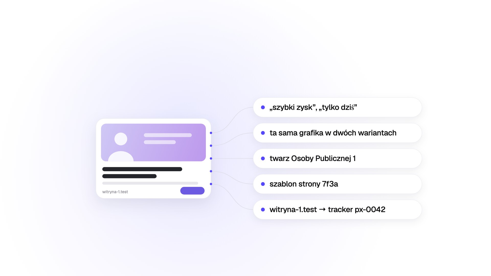
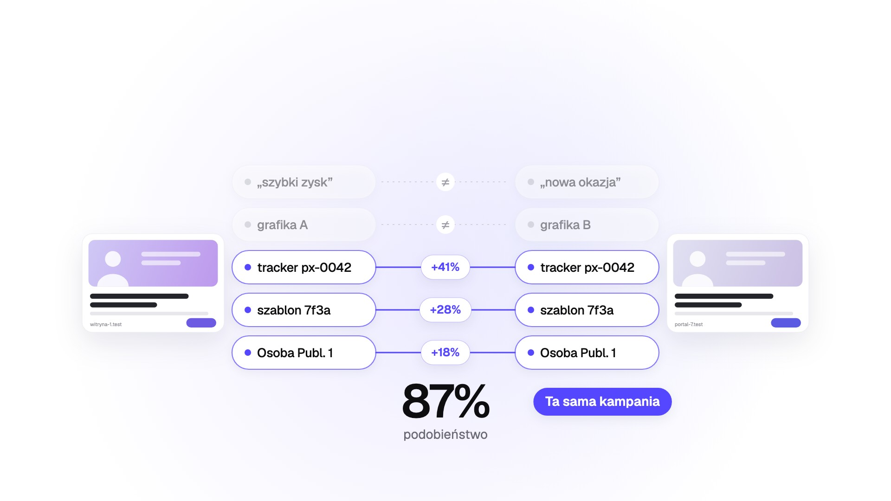
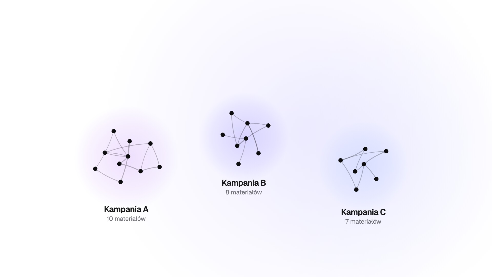
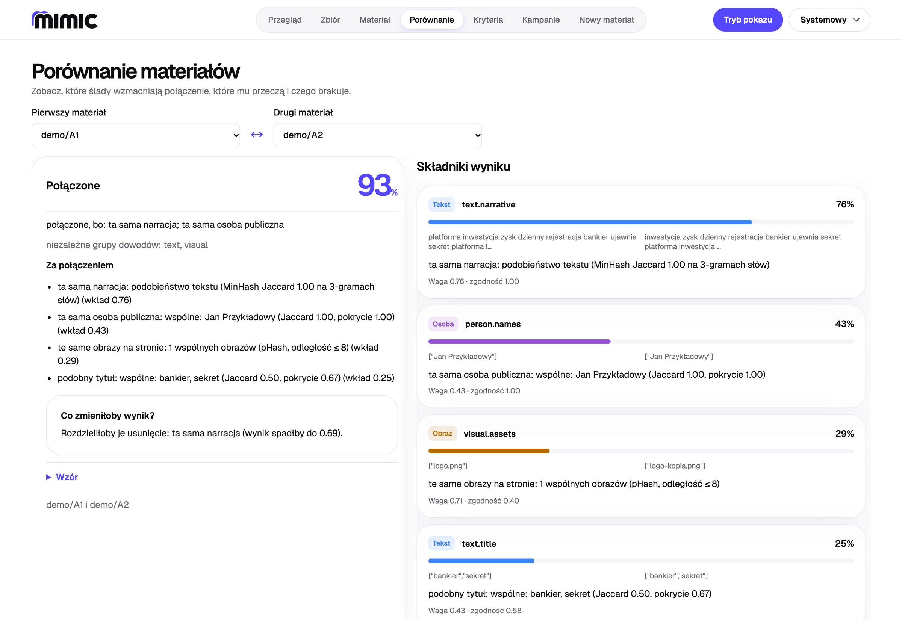
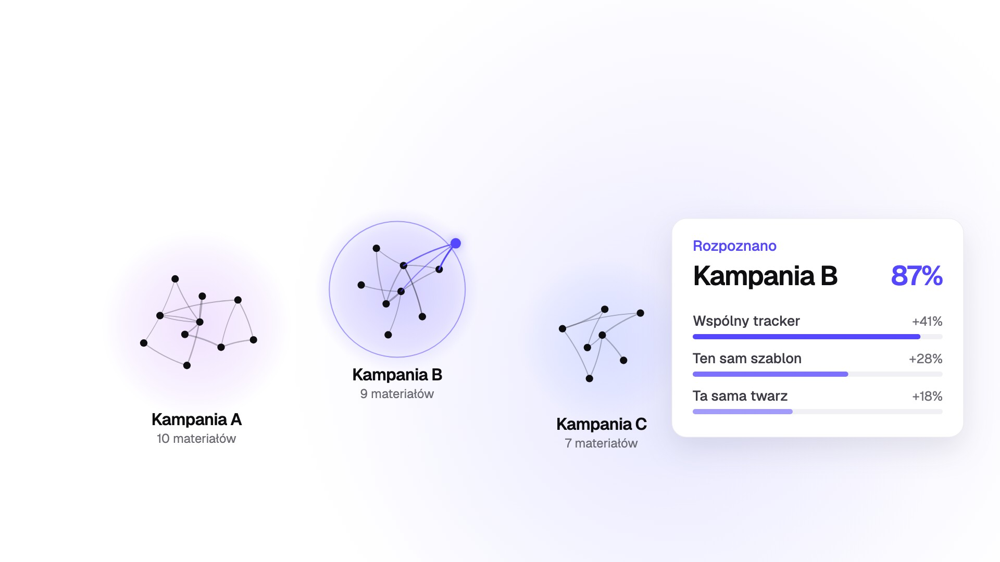
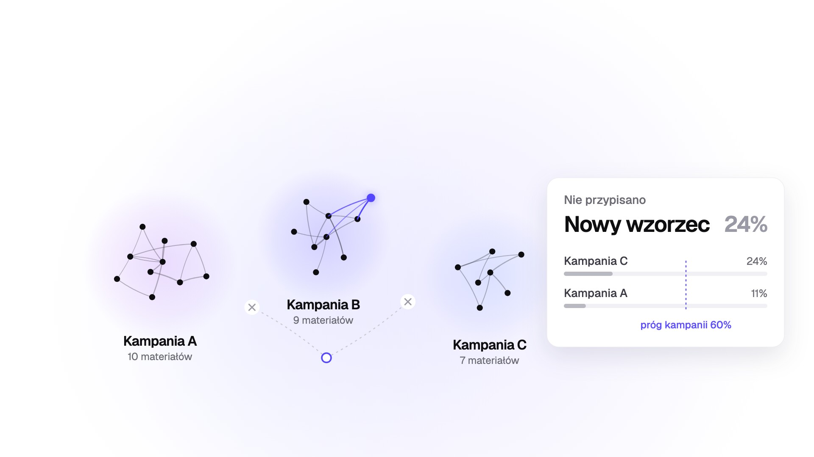
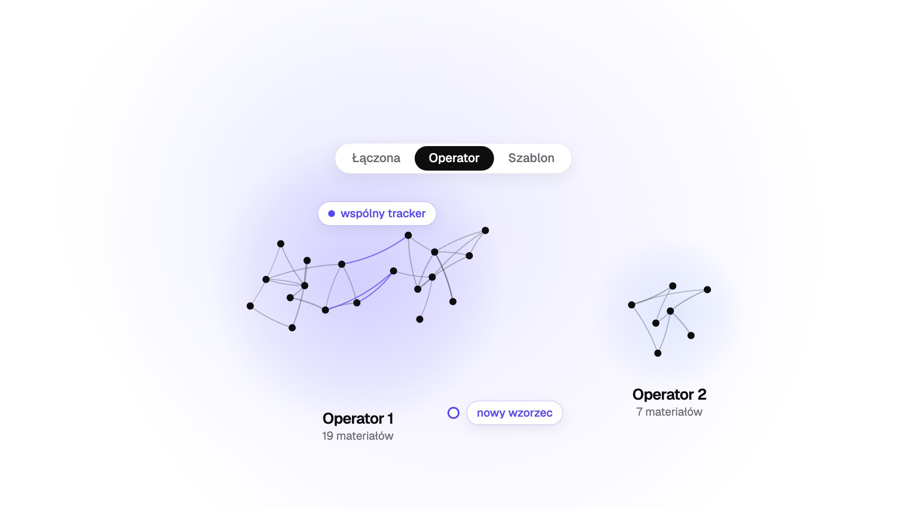
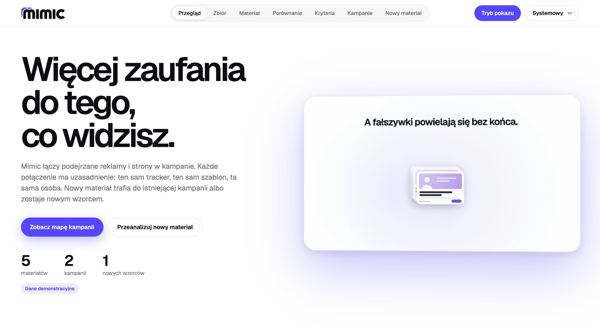

![mimic]()
Więcej zaufania do tego, co widzisz.
Kolekcjoner fejków · Follow the Fake · HackNation 2026
Więcej zaufania do tego, co widzisz.
Kolekcjoner fejków · Follow the Fake · HackNation 2026
Fałszywe reklamy z wizerunkiem znanych osób wyglądają jak prawdziwe.
Jedno zgłoszenie mówi niewiele. Kampanię widać dopiero w zestawieniu.

Analizujemy zapisane pliki. Nigdy nie uruchamiamy kodu oszustów.
Każda cecha ma wartość, pewność i źródło. Brak danych jest jawny, a nie zerem.

Niezależne ślady wzmacniają się nawzajem. Brak danych nie obniża wyniku.
Połączenie wymaga progu i uzasadnienia.
co najmniej tyle wyniku

Słabe podobieństwo nie łączy.


Nowy materiał trafia do kampanii, gdy są na to dowody.

Za mało wspólnych śladów. Powstaje nowy wzorzec.

Operator, szablon, narracja, wizerunek, platforma. Każde kryterium rysuje własną mapę.
Wyniki oceny na danych organizatora i na symulacji ukrytego zbioru.
Zbiór ma 10 przypadków i wstępne etykiety, więc wynik 1,00 jest optymistyczny.
Dlatego liczymy też holdout, warianty z brakami danych i korpus syntetyczny z wabikami.
Każdy materiał jako duplikat, okrojony, bez jednej grupy śladów i z tylko jedną.
Wczytanie, ślady, porównanie, kryteria, mapa i nowy materiał.

Dalej: embeddingi semantyczne jako kolejna cecha, kolejne biblioteki reklam, informacja zwrotna analityka do kalibracji wag.
Więcej zaufania do tego, co widzisz.
Szymon Pytel · Wojciech Palczewski
HackNation 2026 · Bydgoszcz